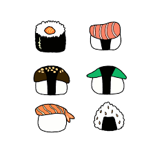

Sushi

Description
Sushi is a Japanese dish, a very healthy snack usually consisting of
raw fish, seaweed, rice, and other vegetables or additions. Fun Fact: Sushi is traditionally eaten by hand.
Ingredients
This is what you will need to make your sushi :)
- Fish of your choice i.e salmon, squid, crab
- White Rice
- Seaweed
- Cucumber
- Soy Sauce
- avacado
Steps
These are the steps you will follow to make your sushi
- Cut up your fish
- Roll the sticky rice out so it is flat
- Lay your seaweed flat
- Lay your flattened sticky rice on the seaweed, it should cover the surface
- Slice your cumber thin and add it on top of rice and seaweed
- Do the same to the avacado
- Add your sliced fish as well
- Roll it all up
- Slice the rolled seaweed into edible portions